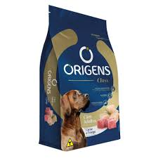
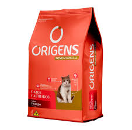
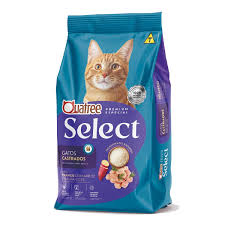

Ração & Cia.
Tudo para o seu pet você encontra aqui

Origens
Origens Class
Cães AdultosSabor Carne e Frango

Origens
Origens Premium Especial
Gatos Castrados
Sabor Frango

Quatree
Quatree Gourmet
Gatos Castrados
Sabor Frango

Quatree
Quatree Select
Gatos Castrados
Sabor Frango, Arroz e Batata Doce